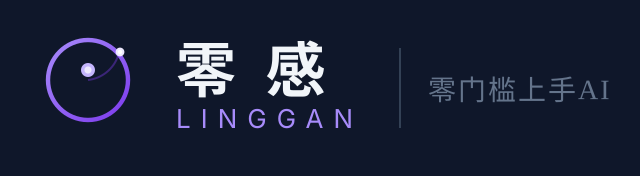

Claude Code + Codex CLI 协同调度器
分析需求 → 智能拆解 → 分派给最适合的 AI 工具执行
github.com/Cail726/aimate · QQ群 956118706
复杂任务要在 Claude 和 Codex 之间来回切，
不知道该用哪个，效率低下
想改个模型参数还得翻代码找配置文件，
没有可视化界面
跑了多少次分析、花了多少 token，
完全不知道
两个 AI 工具都很好用
但我该什么时候用哪个？
输入需求
AI 自动拆解
2-5 个子任务
复杂代码
架构设计
终端操作
脚本测试
你看着
进度条等结果
你只需要描述需求。调度器决定谁干什么。
自然语言输入，AI 分析后拆成 2-5 个独立子任务，标注每个任务适合哪个工具，给出理由
SSE 推送进度，每个子任务的运行状态、耗时、输出预览一目了然
点齿轮直接在浏览器改模型、temperature、API 端点。保存即时生效，不用碰配置文件
每次分析抓取 token 消耗，按定价估算费用。点击 ≈ $ 徽章查看历次明细
LF 换行 + GBK 代码页 → 批处理全用 CRLF + ASCII，chcp 65001 先切 UTF-8
缓存键 bug + 页面无模板变量 → 去掉模板引擎，直接读文件返回
子进程不跟随父进程退出 → start.bat 启动前自动杀旧进程
从环境变量/.env 读取 Key，页面上只填环境变量名，前端永远看不到 Key 值
git clone
然后pip install
五个 Python 包
setx 设环境变量
或写 .env 文件
DeepSeek 免费注册送额度
python server.py
或双击 start.bat
浏览器打开 127.0.0.1:7799
前提：Claude Code 和 Codex CLI 已安装（零感安装器用户天然满足）
开源免费 · GitHub
github.com/Cail726/aimate
956118706
零感实验室 · 交流答疑
零感安装器
AI 开发环境一键部署
Claude Code + Codex 一步到位
让 AI 替你分工
你只需要一个想法